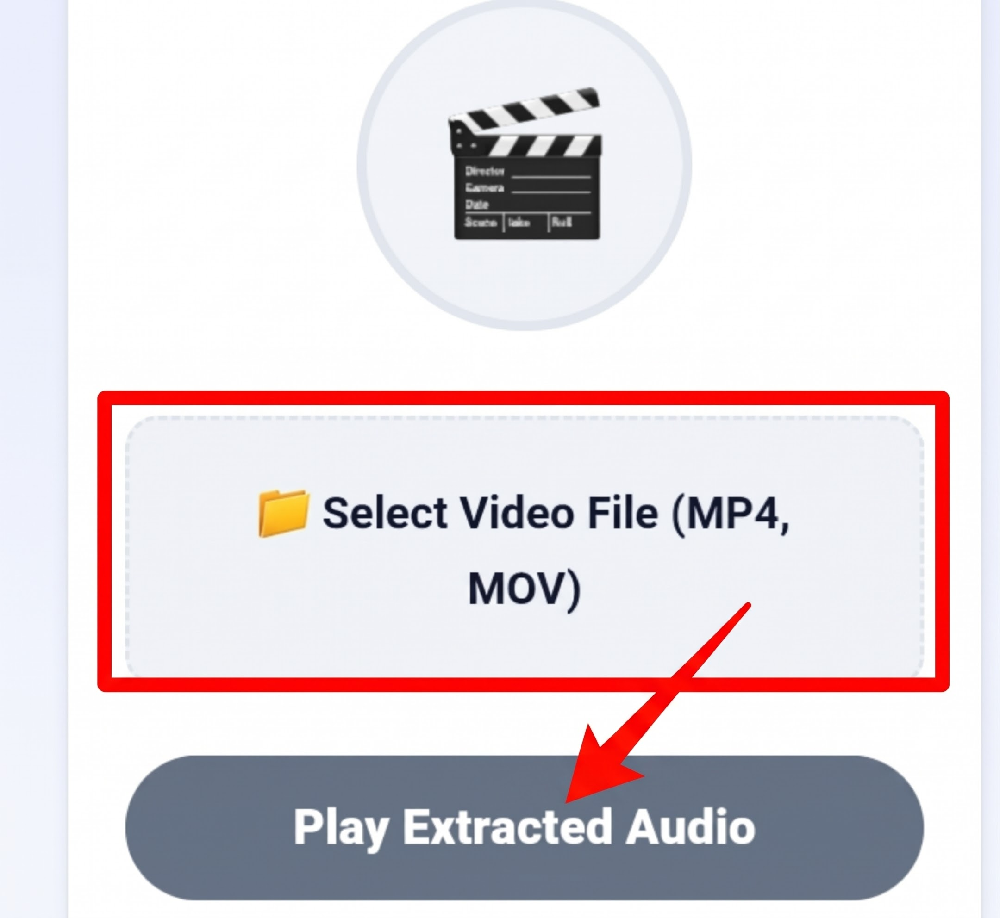

Video to Audio Extractor
Extract high-fidelity audio streams from MP4, MOV, and WebM video files directly in your browser. 100% private, client-side decoding with zero cloud uploads.
🎬
Extract high-fidelity audio streams from MP4, MOV, and WebM video files directly in your browser. 100% private, client-side decoding with zero cloud uploads.
Decouples audio from heavy video frames instantly without lossy re-encoding.
Private video memories and interviews never upload to third-party servers.
Decodes media locally in RAM with instant playback and zero server queues.
Reduces media footprints by over 85% and eliminates GPU rendering draw.
Modern multimedia containers like MP4, MOV, and WebM are not monolithic files; they are multiplexed digital envelopes that bundle distinct video, audio, and subtitle streams together into a synchronized packet structure. When you record a live concert on your phone, download a tutorial webinar, or receive a video interview memo, the video frames (usually encoded in H.264, HEVC, or VP9) consume upwards of 85% to 90% of the total file size. The underlying soundtrack, typically encoded in AAC or Opus, requires only a fraction of that data footprint.
Playing video files solely to listen to spoken lectures or music tracks leads to unnecessary battery consumption on mobile devices. Smartphone displays and GPU video decoders require substantial wattage, while keeping the screen awake in your pocket risks accidental screen taps. The MiMusic Video to Audio Extractor demuxes the media container natively within your web browser, decoupling the high-bandwidth video feed from the audio stream so you can listen with peak efficiency.
Extracting the soundtrack from your video clips takes only seconds:

Select your video recording, let the browser extract the audio stream, and click play.
Tap the dashed file selector to browse local storage. Supports all common video formats including MP4, MOV, and WebM.
Your browser inspects container metadata in memory, isolating the underlying AAC/Opus audio track instantly.
Click "Play Extracted Audio" to listen immediately through headphones or external speakers without rendering video frames.
A standard 10-minute 1080p video file recorded on modern smartphones easily consumes between 200 MB and 400 MB of internal storage. Isolating the audio track reduces that footprint down to just 12 MB to 18 MB without sacrificing acoustic clarity. Moreover, audio-only playback eliminates GPU rendering, significantly extending mobile battery life.
Standard online file converters compress uploaded media aggressively with low-bitrate presets to conserve cloud server costs, shaving off delicate high frequencies. Because MiMusic.net executes stream extraction directly inside your browser sandbox, the original audio codec bitrate is preserved with zero loss in resolution.
Standard online converters require users to transmit private family clips, business conference calls, or sensitive video interviews to remote cloud servers. Beyond obvious data privacy risks, uploading gigabytes of video over cellular data is agonizingly slow:
No. Our tool taps directly into the existing audio stream packaged inside the video container. It decodes the exact AAC, MP3, or Opus audio bitstream embedded by the original recorder without applying harsh compression or lossy downgrades.
Never. All demuxing and audio playback processes occur locally within your web browser memory using HTML5. Your video clips are never uploaded, stored, or transmitted across the internet.
The extractor supports all major video formats recognized by modern mobile and desktop browsers, including MP4, MOV, WebM, and MKV files encoded with AAC, MP3, or Opus soundtracks.
Yes. The tool is fully optimized for mobile browsers like Chrome and Safari. You can directly select camera recordings or saved video downloads from your smartphone gallery.